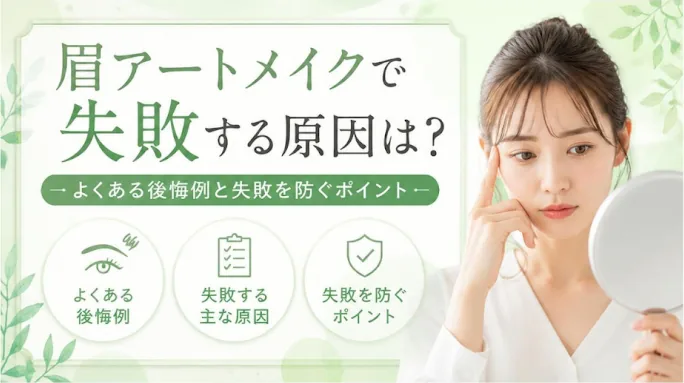
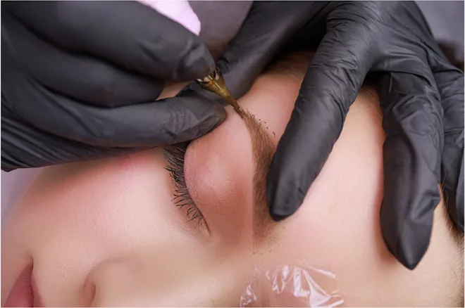
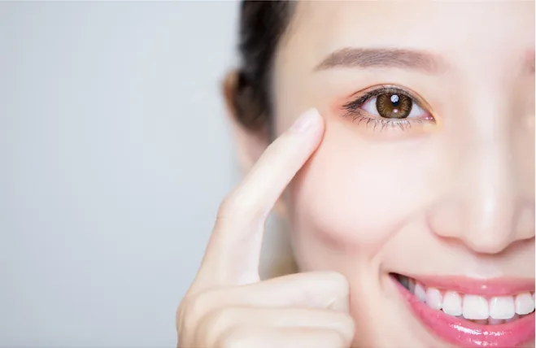
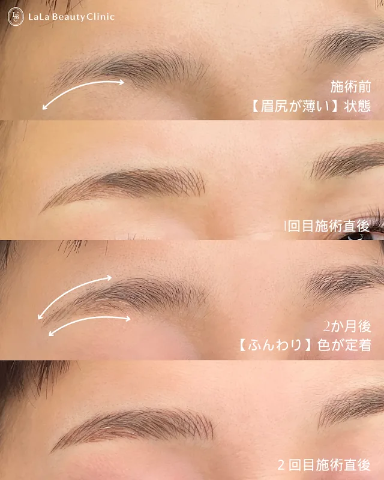
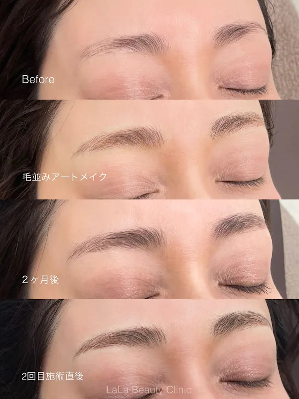

眉アートメイクで失敗する原因は？よくある後悔例と失敗を防ぐポイント

毎朝のメイクが楽になり、すっぴんでも整った眉が手に入る眉アートメイク。とても満足度の高い施術ですが、一度施術を受けるとすぐには消せないため、「失敗したらどうしよう」と不安に思う方も少なくありません。
満足のいく仕上がりにするためには、過去の失敗例やその原因、防ぐためのポイントを事前に知っておくことが大切です。
眉アートメイクでよくある失敗・後悔の例4選

デザインが似合っていない・不自然
眉の太さや角度が顔のバランスに合っておらず、眉だけが取ってつけて見えてしまうケースです。
骨格や表情筋を無視したデザインにしてしまうと、顔の動きと連動せず、デザインが似合っていないだけでなく、表情の動きが不自然に見えてしまいます。
仕上がりの色が濃すぎる・色が合っていない
自眉の色や髪色、肌のトーンに馴染んでおらず、「海苔を貼ったような濃さ」になってしまう後悔例です。髪の毛の色を明るくすることが多い場合は、暗すぎない色にすることや、自眉毛が濃いけど少し明るい色にして軽さを出したい場合は、眉毛の脱色がおすすめです。
左右のバランスがあまりにもあっていない
人の顔は、左右が完璧に揃っている人はほとんどいません。その為、完全に左右差を整えるのは難しいですが、その中でも左右差を目立ちにくくしてくれる・デザインを細かく見てくれる、左右のデザインを確認しながら着実に進めてくれる施術者のいるクリニックでアートメイクをしてもらいましょう。
その時の流行のデザインにしてしまった
施術当時は流行していたデザインにしたものの、トレンドが変わったり自身の好みが変わったりして後悔するケースです。流行を追いかけたい気持ちもわかりますが、流行のデザインや自分の好みが変わってもお化粧で少し足せばデザインを変化させることが可能な範囲でデザインにしましょう。
眉アートメイクで失敗してしまう主な原因
施術者とのイメージ共有・カウンセリング不足
施術者との事前のすり合わせが不十分だと、自分の理想と実際の仕上がりにズレが生じます。
似合わせ眉でお願いをしたとしても細かく深堀してくれる施術者にお願いしましょう。また、デザインを確認する際に気になる箇所があれば遠慮せずはっきりと伝えるようにしましょう。
骨格や表情筋の癖を考慮していないデザイン
人それぞれ骨格や筋肉の動きには左右差があります。これらを考慮せずに静止した顔だけでデザインを決めると、表情を動かしたときに違和感が出やすくなります。
デザインの途中でしっかりと鏡を見ながら確認して進めてくれるクリニックを選択しましょう。
施術者の技術力や実績の不足
眉アートメイクは繊細な技術を要する医療行為です。症例数や経験が少ない施術者だと、色素の定着具合や線の美しさに差が出ることがあります。
SNSで希望しているクリニックの施術者の症例写真を確認し、自分の好みの仕上がりかチェックをしましょう。HPなどで施術者の症例件数や、受賞歴などをチェックするのもおすすめです。
失敗を防ぐ！後悔しないための4つのポイント

事前に理想のイメージを準備しておく
普段のお化粧の雰囲気はもちろん、「ナチュラル」「キリッとした印象」など、なりたいイメージの画像や眉の形が好みの芸能人の写真・画像を事前に準備し持参すると、の際に施術者へ見せながら伝えることでイメージの共有がしやすくなります。
骨格やライフスタイルに合わせたデザイン提案を受ける
流行に流されすぎず、自分の骨格や素顔に馴染むベースデザインを選びましょう。将来のメイクの変化に対応できるよう、少し控えめなデザインにするのもコツです。
また、髪の毛の色を明るくする可能性がある場合は、その旨を事前に施術者へ伝えておくのもポイントです。
信頼できる医療機関・施術者を選ぶ
アートメイクは針を使って皮膚に色素を入れる「医療行為」です。安全面・衛生面が徹底された医療機関（クリニック）であることを必ず確認しましょう。
また、SNSやHPで実際の症例写真を見比べ、自分の理想とするデザインや仕上がりの実績が豊富な施術者を選ぶことが大切です。
定着具合を見ながら、自分のタイミングで通える環境を選ぶ
アートメイクは肌質によって色素の定着に個人差があります。セット契約の期限に追われるのではなく、1回目の経過や仕上がりに納得したうえで2回目の予約を入れられる「都度払いスタイル」なら、ご自身のスケジュールや理想の濃さに合わせてベストなタイミングで2回目以降を受けられるため、無理なく安心して施術を受けられます。
当院の症例


- 施術名
- 眉アートメイク
- 施術の説明
- 専用の針と色素を使用し、皮膚の浅い層に色を着色させる施術です
- 施術の副作用
- 赤み、痒み、腫れ、つっぱり感、熱感、内出血、アレルギー、感染、痺れなどを生じることがあります
- 施術の価格
- 44,000円 ~ 55,000円(税込) / 回
まとめ：事前の準備とクリニック選びで理想の眉へ
眉アートメイクは素顔に自信を持たせてくれる素敵な施術ですが、一度入れるとすぐには消せないからこそ、事前準備とクリニック選びが鍵となります。
コースの期限に追われることなく自分のタイミングで通える環境や、何かあったときにすぐ連絡がつくサポート体制のある医療クリニックなら、初めての方でも安心です。
「自分に似合うデザインがわからない」「痛みが心配」という方も、まずは休診日以外の営業時間内に気軽に相談してみることから初めて見てはいかがでしょうか？